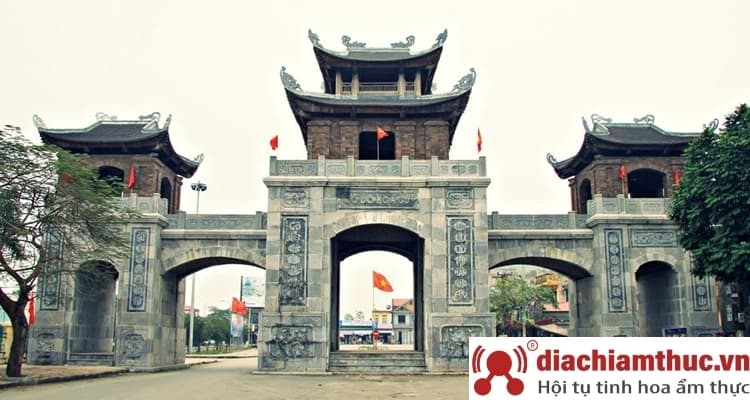

Là một người yêu thích lịch sử nước nhà, mình đã vô cùng hứng thú khi được biết Ninh Bình chính là nơi tọa lạc của quần thể di tích quốc gia đặc biệt quan trọng của Việt Nam. Đồng thời đây cũng là một trong 4 vùng lõi của quần thể di sản thế giới Tràng An.
Chúng ta đã được học ở sách giáo khoa lịch sử vào năm 968, Đinh Bộ Lĩnh dẹp xong loạn 12 sứ quân, lên ngôi hoàng đế và đóng đô ở Hoa Lư. Nơi đây trở thành trung tâm chính trị của nước Đại Cồ Việt. Từ năm 968 đến năm 1009, có 6 vị vua (Đinh Tiên Hoàng, Đinh Phế Đế, Lê Đại Hành, Lê Trung Tông, Lê Long Đĩnh, Lý Thái Tổ) thuộc 3 triều đại đóng đô tại đây.
Vùng bảo vệ đặc biệt: có diện tích 3 km² gồm toàn bộ khu vực bên trong thành Hoa Lư. Trong vùng có các di tích lịch sử: đền Vua Đinh Tiên Hoàng, đền Vua Lê Đại Hành, lăng vua Đinh, lăng vua Lê, đền thờ Công chúa Phất Kim, chùa Nhất Trụ, phủ Vườn Thiên, bia Câu Dền, chùa Kim Ngân, hang Bim, chùa Cổ Am, chùa Duyên Ninh, phủ Chợ, sông Sào Khê,…
Vùng đệm: có diện tích 10,87 km² gồm cảnh quan hai bên sông Sào Khê và quần thể Tràng An.
Các di tích liên quan trực tiếp gồm: các di tích không nằm trong 2 vùng trên nhưng có vai trò quan trọng đối với quê hương và sự nghiệp của triều đại nhà Đinh như chùa Bái Đính, cổng Đông, cổng Nam, động Thiên Tôn, động Hoa Lư, đền thờ Đinh Bộ Lĩnh và quần thể di tích thờ Vua Đinh ở Ninh Bình…
Khách du lịch đến với Ninh Bình nhất định phải ghé tham quan địa điểm này. Du khách cũng đặc biệt yêu thích cố đô Hoa Lư. Mọi người dân đến đây vừa có thêm hiểu biết về lịch sự vừa được dâng hương cầu nguyện. Với những con người yêu thích nét cổ kính trong kiến trúc cũng như lịch sẽ sẽ vô cùng yêu thích nơi đây.
Khu du lịch sinh thái Tràng An – nằm trong Quần thể danh thắng Tràng An, tỉnh Ninh Bình – có diện tích 2168 ha, cách thủ đô Hà Nội hơn 90km về phía nam, thực sự đã trở thành “Nơi mơ đến, chốn mong về” của du khách trong và ngoài nước. Khu du lịch Tràng An với 2 danh hiệu di sản văn hóa thế giới và di sản thiên nhiên do UNESCO công nhận. Sự kết hợp của các loại hình du lịch như: Du lịch sinh thái, Tâm linh và Di tích lịch sử tạo nên những tua du lịch phong phú, hấp dẫn.
Khu du lịch Tràng An Bái Đính có đến 31 hồ và hiện nay có đến 48 hang động thiên nhiên đã được phát hiện và hoạt động du lịch. Có những hang dài tận hơn 2km có thể đi thuyền vào tham quan như : Hang mây, hang Sinh Dược và hang Địa Linh… đến đây mua vé và bán sẽ được người chèo đò đưa đi một vòng trong khu du lịch, ghé các điểm dừng chân chụp ảnh.
Chùa Bái Đính là một quần thể chùa lớn được biết đến với nhiều kỷ lục châu Á và Việt Nam được xác lập. Một trong số đó là chùa có tượng Phật bằng đồng dát vàng lớn nhất châu Á, chùa có hành lang La Hán dài nhất châu Á, chùa có tượng Di lặc bằng đồng lớn nhất Đông Nam Á… Đây là ngôi chùa lớn nhất và sở hữu nhiều kỷ lục nhất ở Việt Nam.
Đây là một địa điểm du lịch mà du khách du lịch hành hương cực kỳ sùng bái. Không gian vô cùng rộng lớn, với diện tích 1700 ha bao gồm khu chùa Bái Đính cổ, khu chùa Bái Đính mới và các khu vực như: công viên văn hoá và học viện Phật giáo, khu đón tiếp và công viên cảnh quan, đường giao thông và bãi đỗ xe, khu hồ Đàm Thị, hồ phóng sinh…
Tam Cốc Bích Động Ninh Bình là quần thể hang động ở vùng đất xã Ninh Hải huyện Hoa Lư tỉnh Ninh Bình, Việt Nam. Khu du lịch Tam Cốc Bích Động có diện tích tự nhiên là 350,3ha. Sẽ thật tuyệt vời khi bạn được rong ruổi trên thuyền trên sông Ngô Đồng thăm thú cảnh đẹp ven sông. Cảnh sắc vô cùng tươi đẹp thu hút đông đảo du khách ghé thăm.
Tam Cốc có hệ thống 3 hang như Hang Cả, hang Hai, Hang 3 đều nối với dòng sông Ngô Đồng mà người ta vẫn ví như Vịnh Hạ Long thu nhỏ. Giá vé đi thuyền khoảng 150.000 VND cho 4 khách. Tiếp theo bạn có thể ghé tham quan Bích Động. Đây là ngôi chùa cổ được xây dựng từ lâu đời. Ngôi chùa nằm gọn trong sự bao bọc của núi rừng. mang vẻ đẹp cổ kính cùng sự phóng khoáng của núi rừng sẽ đặc biệt thu hút bạn.
Nếu bỗng dưng bạn cảm thấy mệt mỏi, muốn tránh xa mọi bộn bề, lo toan của cuộc sống thì có lẽ bạn đang cần một chuyến đi du lịch cho bản thân rồi đó. Nếu là người yêu thích những nét đẹp của vùng đất cố đô thì đi du lịch Ninh Bình sẽ là sự lựa chọn hợp lý dành cho bạn.